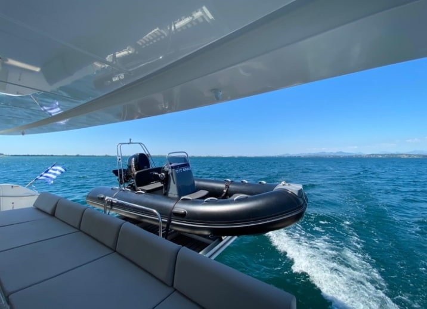
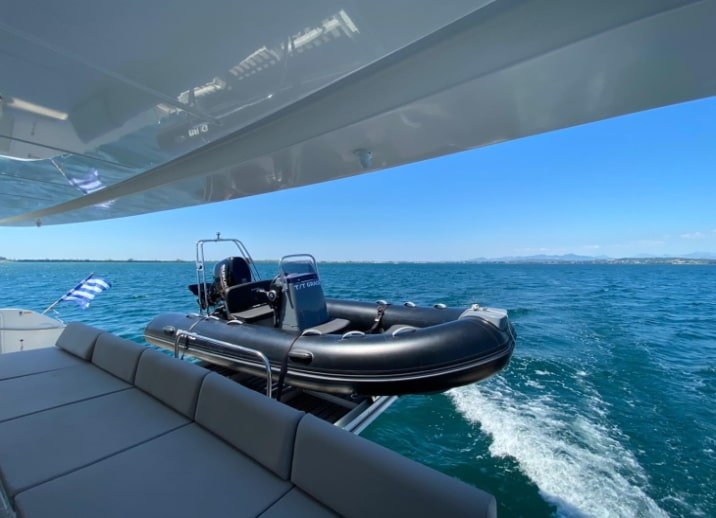
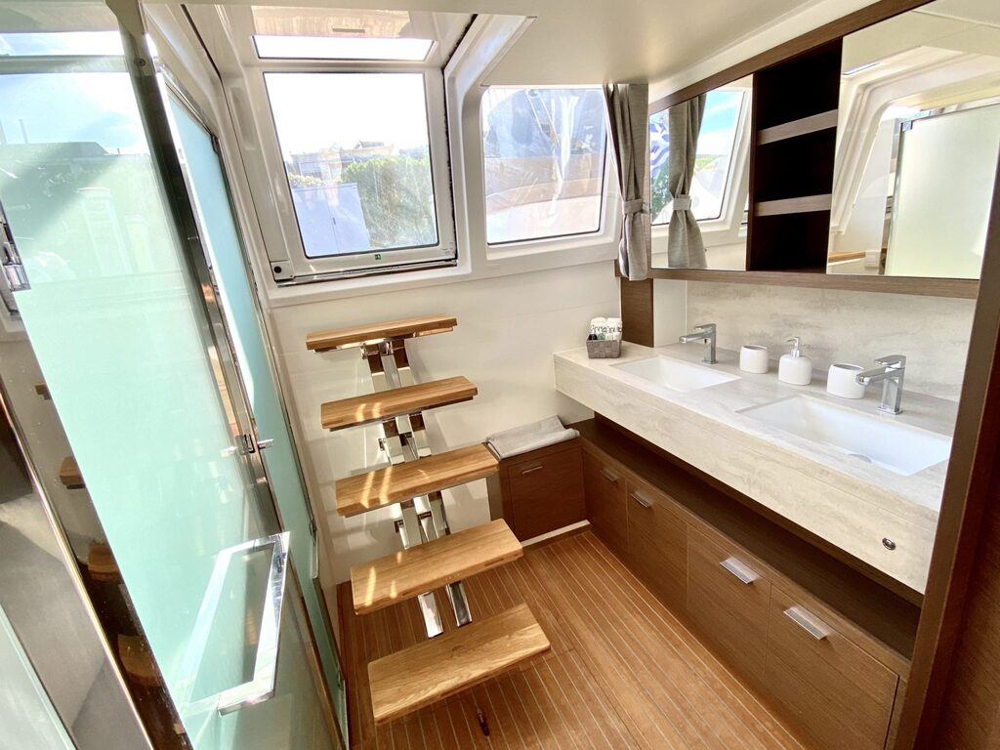
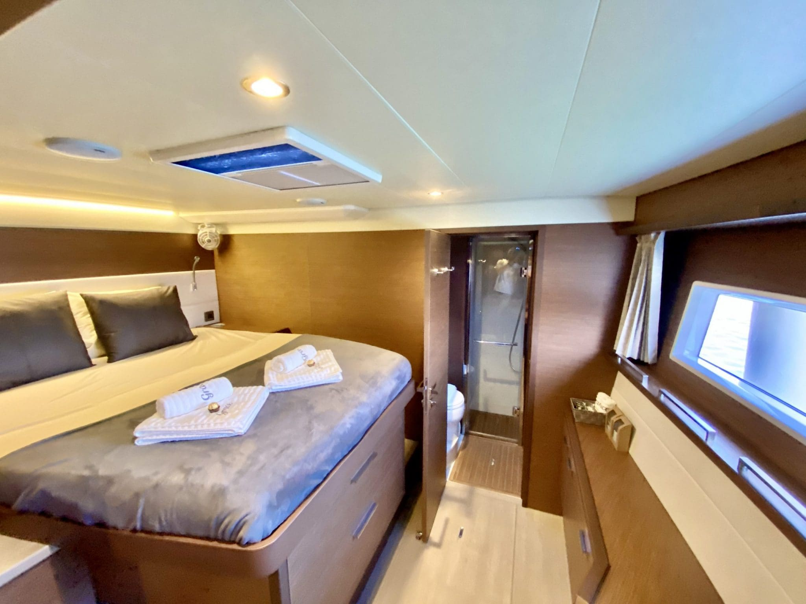
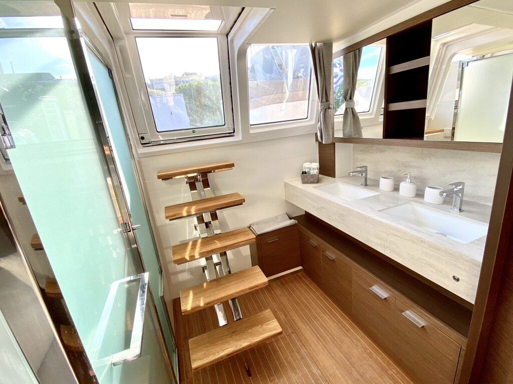
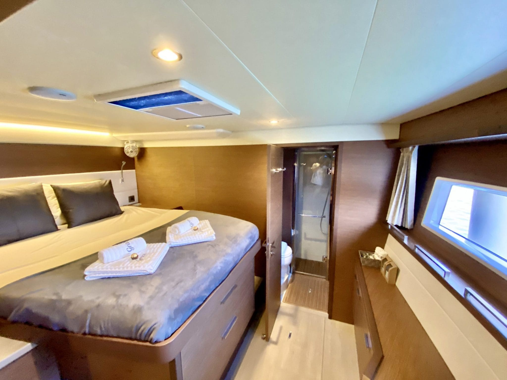

 





Огляд
Ми раді представити вам Lagoon 620 від Solis Charter Group під назвою Grace. "Grace" - найбільша і розкішна яхта у флоті Solis. Скористайтеся всіма островами на борту цього дивовижного катамарану з повним екіпажем.
Спроектована з урахуванням потреб фрахтувальника, Lagoon подбала про те, щоб 620 забезпечувала найкраще розміщення на яхті. Завдяки індивідуальному дизайну, 'Grace' має внутрішню та зовнішню схему, яка виділяє її з натовпу. З великою кількістю простору у вашому розпорядженні ви будете подорожувати з чудовим комфортом, здійснюючи тур прекрасними островами грецького Іонічного моря.
Прекрасно обладнана, ви знайдете безліч розваг, які розважать вас, незалежно від складу вашої групи. Скористайтеся всіма іграшками на борту, включаючи Flite-board air - самохідну дошку для підводного плавання, яка ідеально підійде любителям гострих відчуттів. А під час руху приєднуйтесь до капітана на флайбриджі і допомагайте йому в управлінні вітрилом, полежіть на носовій палубі, щоб позасмагати, або розслабтеся в кокпіті, насолоджуючись професійно приготованим коктейлем післяобіднього. Тут є чим зайнятися.
Grace має постійний екіпаж з трьох осіб: шкіпер, кухар і матрос/хост. Ми доклали всіх зусиль, щоб знайти найкращих доглядачів для нашої флагманської яхти. Наша виняткова команда буде прагнути надати вам найкращі враження протягом усього часу перебування на борту.